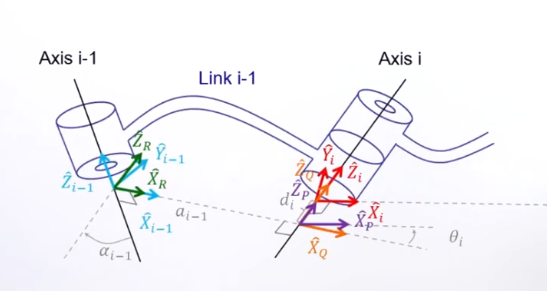

正逆运动学笔记
Rotation Matrix
旋转矩阵的作用：
- 描述物体的姿态；
- 将point由某一个frame的表述换到另一个和此frame有相对转动的frame上来表述；
- ...
Homogeneous Transformation Matrix
齐次变换矩阵...
Forward Kinematics
什么是正运动学
正运动学就是通过关节的驱动来推出机器末端的位姿。
建立关节坐标系
建立坐标系的方法有两种：一种是克雷格（Craig
Version）；另一种是Standard。
如图1所示，对于一个关节（无论是转动关节还是移动关节），总能找到一个关节轴，记为Axis。当然对于转动关节，Axis就是转轴；对于移动关节，Axis就是移动轴。两个相邻的Axis之间有两种情况：一种是异面直线，一种是共面且平行直线。所以，两个相邻的Axis之间一定存在一条直线。
如图1所示，对于一个由Joint和Link复合的一个机械结构，一般通过4个参数进行描述\(\alpha、a、d、\theta\)。其中，\(\alpha\)表示两个Joint转轴之间的角度，\(a\)表示两个转轴之间的距离，\(d\)表示两个Link之间的偏移值，\(\theta\)表示Joint的转动角度。（\(\alpha_i, a_i, d_i, \theta_i\)）可以用来表示第i个Joint的信息。对于转动关节来说，它的\(\theta\)是可变参数；对于移动关节来说，它的\(d\)是可变参数。
如图2所示，需要给每个Joint建立坐标系（\(\widehat{X}_i, \widehat{Y}_i, \widehat{Z}_i\)），其中，\(\widehat{Z}_i\)沿转轴Axis（转动或移动）的方向。\(\widehat{X}_i\)有两种情况：一是当\(a_i \neq 0\)时，它沿着\(a_i\)的方向；二是当\(a_i = 0\)时，它与\(\widehat{Z}_i和\)\(\widehat{Z}_{i+1}\)两者垂直（i.e. 它为\(\widehat{Z}_i和\)\(\widehat{Z}_{i+1}\)的叉积的单位向量）。\(\widehat{Y}_i\)与\(\widehat{X}_i和\)\(\widehat{Z}_{i}\)两者垂直，且遵循右手定则，即\(\widehat{Y}_i = \widehat{Z}_{i} \times \widehat{X}_{i}\)。注意Z和X的顺序。
上述为普遍地建立坐标系的方法。此外，还有两种特殊情况：一是对于地杆Link
0，为了简化计算，一般都将Link 1的坐标系作为Link
0的坐标系。如果Joint 1是转动关节，则把\(\theta_1 = 0\)时的Link 1的坐标系作为Link
0的坐标系；如果Joint 1是移动关节，则把\(d_1 =
0\)时的Link 1的坐标系作为Link 0的坐标系。二是对于最后一个Link
n，Joint n无法确定一个\(a_n\)，进而无法确定\(\widehat{X}_n\)。一般的解决办法是让\(\theta_n=0\)时的\(\widehat{X}_n\)的方向与\(\widehat{X}_{n-1}\)保持相同（【注】：我感觉是从末端向Axis
n做垂线，然后用垂线来确定\(\widehat{X}_n\)）。
杆件之间的变换矩阵
\[ ^{i-1}P = ^{i-1}_iT^iP \tag{1} \]
 \[ ^{i-1}P = ^{i-1}_RT ^R_QT ^Q_PT ^P_iT ^iP \tag{2} \]
\[ \begin{align} ^{i-1}_iT &= ^{i-1}_RT ^R_QT ^Q_PT ^P_iT \\ &= T_{\widehat{X}_{i-1}}(\alpha_{i-1}) T_{\widehat{X}_{R}}(a_{i-1}) T_{\widehat{Z}_{Q}}(\theta_{i}) T_{\widehat{Z}_{P}}(d_{i}) \\ &= \begin{bmatrix} cos\theta_i&-sin\theta_i&0&a_{i-1}\\ cos\alpha_{i-1} sin\theta_i&cos\alpha_{i-1} cos\theta_i&sin\alpha_{i-1} &d_isin\alpha_{i-1} \\ -sin\alpha_{i-1} sin\theta_i&-sin\alpha_{i-1} cos\theta_i&cos\alpha_{i-1} &d_icos\alpha_{i-1} \\ 0&0&0&1\\ \end{bmatrix} \\ \end{align} \tag{3} \]
【注】式（3）的结果和林沛群教授课件上的不同，个人感觉是他出错了。
【注】式（3）有误，应为式（3b）。林是对的。 \[
\begin{align}
^{i-1}_iT &= ^{i-1}_RT ^R_QT ^Q_PT ^P_iT \\
&= T_{\widehat{X}_{i-1}}(\alpha_{i-1})
T_{\widehat{X}_{R}}(a_{i-1}) T_{\widehat{Z}_{Q}}(\theta_{i})
T_{\widehat{Z}_{P}}(d_{i}) \\
&=
\begin{bmatrix}
cos\theta_i&-sin\theta_i&0&a_{i-1}\\
cos\alpha_{i-1} sin\theta_i&cos\alpha_{i-1}
cos\theta_i&-sin\alpha_{i-1} &-d_isin\alpha_{i-1} \\
sin\alpha_{i-1} sin\theta_i&sin\alpha_{i-1}
cos\theta_i&cos\alpha_{i-1} &d_icos\alpha_{i-1} \\
0&0&0&1\\
\end{bmatrix} \\
\end{align}
\tag{3b}
\]
\[ \begin{align} T_{\widehat{X}_{i-1}}(\alpha_{i-1}) &= \begin{bmatrix} &&&0\\ &R_{\widehat{X}_{i-1}}(\alpha_{i-1})&&0\\ &&&0\\ 0&0&0&1\\ \end{bmatrix} \\ &= \begin{bmatrix} 1&0&0&0\\ 0&cos\alpha_{i-1}&sin\alpha_{i-1}&0\\ 0&-sin\alpha_{i-1}&cos\alpha_{i-1}&0\\ 0&0&0&1\\ \end{bmatrix} \\ \end{align} \tag{4} \]
【注】式（3）的错误是由式（4）的错误引起的，式（4）应为式（4b）。但是，目前还不知道为什么是式（4b）。
现在解释一下为什么是 4b 而不是 4：（这是因为 Rotation Matrix 部分没学好。）
我们从 \(\widehat{X}_{i-1}\) 的方向向 \(\widehat{X}_{i-1}\) 的负方向看去，坐标系 \(\{i-1\}\) 绕 \(\widehat{X}\) 轴顺时针旋转 \(\alpha\) 度获得坐标系 \(\{R\}\) 。然后，将坐标系 \(\{R\}\) 的 \(\widehat{Z}_R\) 和 \(\widehat{Y}_R\) 轴依次向坐标系 \(\{i-1\}\) 做投影，应该是获得式（4）而不是式（4b），但是，\(\alpha\) 角是有方向的，顺时针旋转为负。因此，式（4）应该改为： \[ \begin{align} T_{\widehat{X}_{i-1}}(-\alpha_{i-1}) &= \begin{bmatrix} &&&0\\ &R_{\widehat{X}_{i-1}}(-\alpha_{i-1})&&0\\ &&&0\\ 0&0&0&1\\ \end{bmatrix} \\ &= \begin{bmatrix} 1&0&0&0\\ 0&cos(-\alpha_{i-1})&sin(-\alpha_{i-1})&0\\ 0&-sin(-\alpha_{i-1})&cos(-\alpha_{i-1})&0\\ 0&0&0&1\\ \end{bmatrix} \\ \end{align} \]
做三角变换可得到式 （4b）。
\[ \begin{align} T_{\widehat{X}_{i-1}}(\alpha_{i-1}) &= \begin{bmatrix} &&&0\\ &R_{\widehat{X}_{i-1}}(\alpha_{i-1})&&0\\ &&&0\\ 0&0&0&1\\ \end{bmatrix} \\ &= \begin{bmatrix} 1&0&0&0\\ 0&cos\alpha_{i-1}&-sin\alpha_{i-1}&0\\ 0&sin\alpha_{i-1}&cos\alpha_{i-1}&0\\ 0&0&0&1\\ \end{bmatrix} \\ \end{align} \tag{4b} \]
\[ \begin{align} T_{\widehat{X}_{R}}(a_{i-1}) &= \begin{bmatrix} 1&0&0&\\ 0&1&0&P_{\widehat{X}_{R}}(a_{i-1})\\ 0&0&1&\\ 0&0&0&1\\ \end{bmatrix} \\ &= \begin{bmatrix} 1&0&0&a_{i-1}\\ 0&1&0&0\\ 0&0&1&0\\ 0&0&0&1\\ \end{bmatrix} \\ \end{align} \tag{5} \]
\[ \begin{align} T_{\widehat{Z}_{Q}}(\theta_{i}) &= \begin{bmatrix} &&&0\\ &R_{\widehat{Z}_{Q}}(\theta_{i})&&0\\ &&&0\\ 0&0&0&1\\ \end{bmatrix} \\ &= \begin{bmatrix} cos\theta_{i}&-sin\theta_{i}&0&0\\ sin\theta_{i}&cos\theta_{i}&0&0\\ 0&0&1&0\\ 0&0&0&1\\ \end{bmatrix} \\ \end{align} \tag{6} \]
\[ \begin{align} T_{\widehat{Z}_{P}}(d_{i}) &= \begin{bmatrix} 1&0&0&\\ 0&1&0&P_{\widehat{Z}_{P}}(d_{i})\\ 0&0&1&\\ 0&0&0&1\\ \end{bmatrix} \\ &= \begin{bmatrix} 1&0&0&0\\ 0&1&0&0\\ 0&0&1&d_{i}\\ 0&0&0&1\\ \end{bmatrix} \\ \end{align} \tag{7} \]
进一步，第一个杆件和最后一个杆件之间的变换矩阵为式（8）。
\[ ^{0}_nT = ^{0}_1T^{1}_2T^{2}_3T ... ^{n-2}_{n-1}T^{n-1}_{n}T \tag{8} \]
Instance
我们通过一个简单的二连杆进行一次正运动学推导。
给图中二连杆的各个关节建立坐标系。
【分析】：
- 给Joint 1建立坐标系（即第1个坐标系）：
Joint 1 和 Joint 2 的转轴Axis垂直于平面，且相互平行。因此，\(\alpha_1=0\)，\(a_1=\{link1的长度\}\)；
\(\widehat{X_1}\)的方向沿\(a_1\)，\(\widehat{Z_1}\)的方向设为沿Joint1 的转轴向外，进而，可得\(\widehat{Y_1} = \widehat{X_1} \times \widehat{Z_1}\)。
- 给基座建立坐标系（即第0个坐标系）：
- 把\(\theta_1=0\)时的第1个坐标系作为第0个坐标系。
- 给Joint 2建立坐标系（即第2个坐标系）：
- 首先最关键的是要确定\(\widehat{X_2}\)的方向。将\(\widehat{X_1}\)的方向作为\(\theta_2=0\)时的\(\widehat{X_2}\)的方向；
- \(\widehat{Z_2}\)的方向设为沿Joint2 的转轴向外，进而，可得\(\widehat{Y_2} = \widehat{X_2} \times \widehat{Z_2}\)。
| \(i\) | \(\alpha_{i-1}\) | \(a_{i-1}\) | \(d_i\) | \(\theta_{i}\) |
|---|---|---|---|---|
| 1 | 0 | 0 | 0 | \(\theta_1\) |
| 2 | 0 | \(L_1\) | 0 | \(\theta_2\) |
记二连杆的末端点为\(P\)，令\(P\)在 Joint 2 的坐标系下的位置为\(^2P = (L_2, 0, 0)^T\)。假设基坐标系为世界坐标系。 \[ \begin{bmatrix} & \\ ^0P \\ & \\ 1 \\ \end{bmatrix} = ^0_1T ^1_2T \begin{bmatrix} & \\ ^2P \\ & \\ 1 \\ \end{bmatrix} \tag{9} \]
\[ \begin{align} ^0P &= \begin{bmatrix} cos\theta_1&-sin\theta_1&0&a_{0}\\ cos\alpha_{0} sin\theta_1&cos\alpha_{0} cos\theta_1&sin\alpha_{0} &d_1sin\alpha_{0} \\ -sin\alpha_{0} sin\theta_1&-sin\alpha_{0} cos\theta_1&cos\alpha_{0} &d_1cos\alpha_{0} \\ 0&0&0&1\\ \end{bmatrix} \begin{bmatrix} cos\theta_2&-sin\theta_2&0&a_{1}\\ cos\alpha_{1} sin\theta_2&cos\alpha_{1} cos\theta_2&sin\alpha_{1} &d_2sin\alpha_{1} \\ -sin\alpha_{1} sin\theta_2&-sin\alpha_{1} cos\theta_2&cos\alpha_{1} &d_2cos\alpha_{1} \\ 0&0&0&1\\ \end{bmatrix} {^2P}\\ &= \begin{bmatrix} cos\theta_1&-sin\theta_1&0&0\\ sin\theta_1&cos\theta_1&0 &0 \\ 0&0&1 &0 \\ 0&0&0&1\\ \end{bmatrix} \begin{bmatrix} cos\theta_2&-sin\theta_2&0&L_{1}\\ sin\theta_2&cos\theta_2&0 &0 \\ 0&0&1 &0 \\ 0&0&0&1\\ \end{bmatrix} {^2P} \\ &= \begin{bmatrix} cos\theta_{1}cos\theta_2-sin\theta_{1}sin\theta_{2}&-cos\theta_{1}sin\theta_2 sin\theta_{1}cos\theta_{2}&0&L_{1}cos\theta_{1}\\ sin\theta_1cos\theta_{2}+cos\theta_{1}sin\theta_{2}&-sin\theta_{1}sin\theta_{2}+cos\theta_{1}cos\theta_2&0 &L_1sin\theta_{1} \\ 0&0&1 &0 \\ 0&0&0&1\\ \end{bmatrix} \begin{bmatrix} L_{2}\\ 0 \\ 0 \\ 1\\ \end{bmatrix} \\ &= \begin{bmatrix} (cos\theta_{1}cos\theta_2-sin\theta_{1}sin\theta_{2})L_2+L_{1}cos\theta_{1}\\ (sin\theta_1cos\theta_{2}+cos\theta_{1}sin\theta_{2})L_2+L_1sin\theta_{1} \\ 0 \\ 1\\ \end{bmatrix} \\ &= \begin{bmatrix} cos(\theta_{1}+\theta_{2})L_2+L_{1}cos\theta_{1}\\ sin(\theta_{1}+\theta_{2})L_2+L_1sin\theta_{1} \\ 0 \\ 1\\ \end{bmatrix} \end{align} \tag{10} \]
Inverse Kinematics
什么是逆运动学
逆运动学就是通过机器末端的位姿来反推各个关节的驱动。
求解方法
- 解析法
- 代数和几何方法
- 数值法
- 用计算机试值
- 目前大多数机械臂设计成具有解析解
- 对于一个六轴机械臂，设计时让它的相邻三轴相交一点，一般这样的手臂就能找到解析解。目前，机械臂多将后三个轴相交一点。
Instance
假设基坐标系为世界坐标系。令\(P\)为目标点，已知\(P\)点在世界坐标系的坐标为\((x, y, z)=(x, y, 0)\)，进而可以推出Joint 2坐标系原点的坐标为\((x-L_2cos\varphi, y-L_2sin\varphi, 0)\)，因此Joint 2坐标系相对于世界坐标系的变换矩阵\(^0_2T\)可以表示为 \[ \begin{bmatrix} cos\varphi&-sin\varphi&0&x-L_2cos\varphi\\ sin\varphi&cos\varphi&0&y-L_2sin\varphi \\ 0&0&1&0 \\ 0&0&0&1\\ \end{bmatrix} \tag{11} \] 根据正运动学公式\(^0_2T\)还可以表示为 \[ \begin{bmatrix} cos\theta_{1}cos\theta_2-sin\theta_{1}sin\theta_{2}&-cos\theta_{1}sin\theta_2-sin\theta_{1}cos\theta_{2}&0&L_{1}cos\theta_{1}\\ sin\theta_1cos\theta_{2}+cos\theta_{1}sin\theta_{2}&-sin\theta_{1}sin\theta_{2}+cos\theta_{1}cos\theta_2&0 &L_1sin\theta_{1} \\ 0&0&1 &0 \\ 0&0&0&1\\ \end{bmatrix} \tag{12} \] 根据三角公式进一步化简得 \[ \begin{bmatrix} cos(\theta_{1}+\theta_2)&-sin(\theta_1+\theta_{2})&0&L_{1}cos\theta_{1}\\ sin(\theta_1+\theta_{2})&cos(\theta_{1}+\theta_{2})&0 &L_1sin\theta_{1} \\ 0&0&1 &0 \\ 0&0&0&1\\ \end{bmatrix} \tag{13} \]
代数法
联立式（11）和（13）得 \[ \begin{cases} cos\varphi= cos(\theta_1+\theta_2)\\ sin\varphi= sin(\theta_1+\theta_2)\\ x-L_2cos\varphi=L_1cos\theta_1\\ y-L_2sin\varphi=L_1sin\theta_1\\ \end{cases} \tag{14} \]
\[ \begin{cases} x= L_1cos\theta_1 + L_2cos(\theta_1+\theta_2)\\ y= L_1sin\theta_1 + L_2sin(\theta_1+\theta_2)\\ \end{cases} \tag{15} \]
\[ \begin{align} x^2 + y^2 &= L_1^2 + L_2^2 + 2L_1L_2[cos\theta_1cos(\theta_1+\theta_2) + sin\theta_1sin(\theta_1+\theta_2)] \\ &= L_1^2 + L_2^2 + 2L_1L_2cos\theta_2 \end{align} \tag{16} \]
\[ \theta_2 = \pm arccos(\frac{x^2+y^2-L_1^2-L_2^2}{2L_1L_2}) \]
\[ \begin{cases} x= L_1cos\theta_1 + L_2cos(\theta_1+\theta_2) = (L_1+L_2cos\theta_2)cos\theta_1+(-L_2sin\theta_2)sin\theta_1\\ y= L_1sin\theta_1 + L_2sin(\theta_1+\theta_2) = (L_1+L_2cos\theta_2)sin\theta_1 + (\, \, \, \, \, L_2sin\theta_2)cos\theta_1\\ \end{cases} \tag{17} \]
\[ \begin{cases} x \triangleq k_1cos\theta_1 - k_2sin\theta_1 \\ y \triangleq k_1sin\theta_1 + k_2cos\theta_1\\ \end{cases} \tag{18} \]
\[ r = + \sqrt{k_1^2+k_2^2} \\ \gamma=arctan(k_2/k_1) \tag{19} \]
\[ k_1 = r cos\gamma \\ k_2 = r sin\gamma \tag{20} \]
\[ \begin{cases} \frac{x}{r} = cos\gamma cos\theta_1 - sin\gamma sin\theta_1 = cos(\gamma + \theta_1) \\ \frac{y}{r} = cos\gamma sin\theta_1 - sin\gamma cos\theta_1 = sin(\gamma + \theta_1) \end{cases} \tag{21} \]
\[ tan(\gamma + \theta_1) = y/x \\ \theta_1 = arctan(y/x) - \gamma = arctan(y/x) - arctan(k_2/k_1) \tag{22} \]
几何法
连接\(P\)点和基坐标系原点，记为\(L_0\)，\(L_0 = \sqrt{x^2+y^2}\)。对三角形\(\bigtriangleup_{L_0L_1L_2}\)做一个余弦定理得 \[ L_0^2 = L_1^2 + L_2^2 - 2L_1L_2cos(\pi-\theta_2) \tag{23} \] 进而，解得 \[ cos\theta_2=\frac{x^2+y^2-L_1^2-L_2^2}{2L_1L_2} \\ \theta_2 = \pm arccos(\frac{x^2+y^2-L_1^2-L_2^2}{2L_1L_2}) \tag{24} \] 由于\(\varphi\)的限制，上式中\(\theta_2\)应取正值。然后，可求出\(\theta_1\)为：\(\theta_1 = \varphi - \theta_2\)。
MATLAB验证
验证正运动学
二连杆采用Modified DH创建的DH表如下：
| \(i\) | \(\alpha_{i-1}\) | \(a_{i-1}\) | \(d_i\) | \(\theta_{i}\) |
|---|---|---|---|---|
| 1 | 0 | 0 | 0 | \(\theta_1=\pi/2\) |
| 2 | 0 | \(L_1=5\) | 0 | \(\theta_2 = -\pi/2\) |
| 3 | 0 | \(L_2=3\) | 0 | 0 |
利用Robotics System Toolbox求解正运动学（这里作为标准答案检验我们的矩阵公式法求解的结果是否为真）
1 | |

可以看到末端点的坐标为\([3, 5, 0]\)。
利用矩阵公式求解正运动学
1 | |
1 | |
1 | |
可以看到末端点的坐标也为\([3, 5, 0]\)。
验证逆运动学
利用Robotics System Toolbox对平面二连杆进行逆运动学计算
1 | |
1 | |
利用矩阵公式求解逆运动学